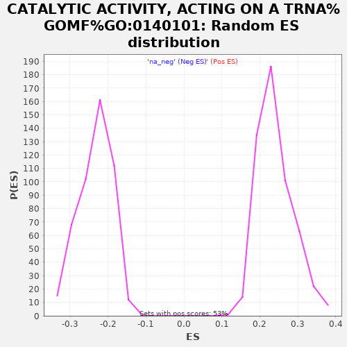

| | | Dataset | rankedList |
| Phenotype | NoPhenotypeAvailable |
| Upregulated in class | na_neg |
| GeneSet | CATALYTIC ACTIVITY, ACTING ON A TRNA%GOMF%GO:0140101 |
| Enrichment Score (ES) | -0.60178345 |
| Normalized Enrichment Score (NES) | -2.575064 |
| Nominal p-value | 0.0 |
| FDR q-value | 0.0 |
| FWER p-Value | 0.0 |
Table: GSEA Results Summary
 Fig 1: Enrichment plot: CATALYTIC ACTIVITY, ACTING ON A TRNA%GOMF%GO:0140101
Fig 1: Enrichment plot: CATALYTIC ACTIVITY, ACTING ON A TRNA%GOMF%GO:0140101
Profile of the Running ES Score & Positions of GeneSet Members on the Rank Ordered List
| PROBE | GENE SYMBOL | GENE_TITLE | RANK IN GENE LIST | RANK METRIC SCORE | RUNNING ES | CORE ENRICHMENT | | 1 | NSUN3 | | | 252 | 0.530 | 0.0166 | No |
| 2 | POP7 | | | 920 | 0.263 | -0.0035 | No |
| 3 | NT5C3A | | | 3508 | 0.117 | -0.1321 | No |
| 4 | PUS1 | | | 3825 | 0.110 | -0.1425 | No |
| 5 | PTRH1 | | | 4292 | 0.099 | -0.1613 | No |
| 6 | RPP25 | | | 5132 | 0.081 | -0.2006 | No |
| 7 | TRPT1 | | | 5966 | 0.064 | -0.2405 | No |
| 8 | TSEN2 | | | 6076 | 0.062 | -0.2427 | No |
| 9 | TRMT61A | | | 6544 | 0.053 | -0.2641 | No |
| 10 | PARS2 | | | 6659 | 0.051 | -0.2672 | No |
| 11 | PTRHD1 | | | 6708 | 0.050 | -0.2669 | No |
| 12 | TRMT1L | | | 6848 | 0.047 | -0.2715 | No |
| 13 | KIAA1456 | | | 7072 | 0.043 | -0.2808 | No |
| 14 | DUS1L | | | 7103 | 0.043 | -0.2799 | No |
| 15 | DTD1 | | | 7878 | 0.028 | -0.3188 | No |
| 16 | TSEN34 | | | 8337 | 0.019 | -0.3417 | No |
| 17 | SARS2 | | | 8528 | 0.016 | -0.3507 | No |
| 18 | BCDIN3D | | | 8607 | 0.014 | -0.3540 | No |
| 19 | EARS2 | | | 8791 | 0.011 | -0.3629 | No |
| 20 | METTL2A | | | 9005 | 0.007 | -0.3737 | No |
| 21 | KARS | | | 9293 | 0.001 | -0.3886 | No |
| 22 | METTL8 | | | 9788 | -0.008 | -0.4139 | No |
| 23 | LRRC47 | | | 10134 | -0.014 | -0.4311 | No |
| 24 | TARS | | | 10333 | -0.019 | -0.4404 | No |
| 25 | TSEN54 | | | 11036 | -0.033 | -0.4753 | No |
| 26 | GARS | | | 11160 | -0.035 | -0.4797 | No |
| 27 | YARS | | | 11213 | -0.036 | -0.4804 | No |
| 28 | TRMT12 | | | 11549 | -0.043 | -0.4955 | No |
| 29 | FARSA | | | 11665 | -0.045 | -0.4990 | No |
| 30 | DUS4L | | | 11685 | -0.045 | -0.4975 | No |
| 31 | DALRD3 | | | 12211 | -0.057 | -0.5217 | No |
| 32 | DUS3L | | | 12518 | -0.065 | -0.5340 | No |
| 33 | TRMT10B | | | 12616 | -0.067 | -0.5353 | No |
| 34 | HARS2 | | | 12640 | -0.067 | -0.5327 | No |
| 35 | TRMT44 | | | 12704 | -0.069 | -0.5322 | No |
| 36 | ICT1 | | | 13013 | -0.076 | -0.5440 | No |
| 37 | VARS | | | 13045 | -0.077 | -0.5414 | No |
| 38 | MARS2 | | | 13583 | -0.089 | -0.5644 | No |
| 39 | RPP40 | | | 13727 | -0.093 | -0.5667 | No |
| 40 | TYW1 | | | 13942 | -0.097 | -0.5724 | No |
| 41 | RPP14 | | | 14209 | -0.104 | -0.5804 | No |
| 42 | THUMPD2 | | | 14491 | -0.111 | -0.5889 | No |
| 43 | METTL2B | | | 14656 | -0.115 | -0.5910 | No |
| 44 | DARS2 | | | 14711 | -0.116 | -0.5873 | No |
| 45 | FARSB | | | 14911 | -0.121 | -0.5909 | No |
| 46 | QTRTD1 | | | 15120 | -0.127 | -0.5947 | Yes |
| 47 | QTRT1 | | | 15141 | -0.128 | -0.5886 | Yes |
| 48 | WARS | | | 15142 | -0.128 | -0.5814 | Yes |
| 49 | FTSJ1 | | | 15188 | -0.129 | -0.5766 | Yes |
| 50 | GATC | | | 15303 | -0.131 | -0.5751 | Yes |
| 51 | WARS2 | | | 15360 | -0.133 | -0.5706 | Yes |
| 52 | IARS2 | | | 15385 | -0.134 | -0.5644 | Yes |
| 53 | WDR4 | | | 15405 | -0.134 | -0.5578 | Yes |
| 54 | SARS | | | 15426 | -0.135 | -0.5513 | Yes |
| 55 | TRMT2B | | | 15427 | -0.135 | -0.5438 | Yes |
| 56 | RARS | | | 15798 | -0.145 | -0.5549 | Yes |
| 57 | RPP38 | | | 15811 | -0.146 | -0.5474 | Yes |
| 58 | RPP21 | | | 15817 | -0.146 | -0.5395 | Yes |
| 59 | TRMT5 | | | 15977 | -0.151 | -0.5393 | Yes |
| 60 | ALKBH1 | | | 16147 | -0.155 | -0.5395 | Yes |
| 61 | AARS2 | | | 16186 | -0.157 | -0.5327 | Yes |
| 62 | NARS | | | 16194 | -0.157 | -0.5242 | Yes |
| 63 | MTFMT | | | 16247 | -0.159 | -0.5180 | Yes |
| 64 | VARS2 | | | 16395 | -0.164 | -0.5165 | Yes |
| 65 | PTGES3L-AARSD1 | | | 16427 | -0.165 | -0.5089 | Yes |
| 66 | TRDMT1 | | | 16445 | -0.166 | -0.5005 | Yes |
| 67 | POP5 | | | 16519 | -0.168 | -0.4949 | Yes |
| 68 | METTL1 | | | 16545 | -0.169 | -0.4867 | Yes |
| 69 | TARSL2 | | | 16551 | -0.169 | -0.4775 | Yes |
| 70 | ELAC2 | | | 16552 | -0.169 | -0.4680 | Yes |
| 71 | POP1 | | | 16594 | -0.170 | -0.4606 | Yes |
| 72 | TRMT61B | | | 16629 | -0.172 | -0.4527 | Yes |
| 73 | PTRH2 | | | 16669 | -0.173 | -0.4450 | Yes |
| 74 | PUS10 | | | 16679 | -0.174 | -0.4358 | Yes |
| 75 | NSUN2 | | | 16778 | -0.177 | -0.4310 | Yes |
| 76 | METTL6 | | | 16786 | -0.178 | -0.4214 | Yes |
| 77 | CARS | | | 16831 | -0.179 | -0.4136 | Yes |
| 78 | AARS | | | 16842 | -0.180 | -0.4041 | Yes |
| 79 | C9orf156 | | | 16910 | -0.183 | -0.3973 | Yes |
| 80 | TRNT1 | | | 16921 | -0.183 | -0.3876 | Yes |
| 81 | THUMPD3 | | | 17050 | -0.188 | -0.3837 | Yes |
| 82 | MARS | | | 17067 | -0.189 | -0.3740 | Yes |
| 83 | POP4 | | | 17079 | -0.189 | -0.3640 | Yes |
| 84 | TRIT1 | | | 17157 | -0.192 | -0.3572 | Yes |
| 85 | TRMT10C | | | 17165 | -0.193 | -0.3468 | Yes |
| 86 | ALKBH8 | | | 17179 | -0.193 | -0.3366 | Yes |
| 87 | TRMT1 | | | 17207 | -0.194 | -0.3271 | Yes |
| 88 | LCMT2 | | | 17342 | -0.200 | -0.3229 | Yes |
| 89 | NSUN6 | | | 17377 | -0.201 | -0.3134 | Yes |
| 90 | KIAA0391 | | | 17451 | -0.204 | -0.3057 | Yes |
| 91 | YARS2 | | | 17599 | -0.211 | -0.3016 | Yes |
| 92 | DARS | | | 17683 | -0.215 | -0.2939 | Yes |
| 93 | TYW3 | | | 17697 | -0.215 | -0.2825 | Yes |
| 94 | PUS3 | | | 17701 | -0.216 | -0.2706 | Yes |
| 95 | TYW5 | | | 17786 | -0.220 | -0.2626 | Yes |
| 96 | RARS2 | | | 17804 | -0.220 | -0.2512 | Yes |
| 97 | TARS2 | | | 17960 | -0.229 | -0.2464 | Yes |
| 98 | CARS2 | | | 18025 | -0.233 | -0.2367 | Yes |
| 99 | DTD2 | | | 18073 | -0.236 | -0.2259 | Yes |
| 100 | QARS | | | 18300 | -0.253 | -0.2235 | Yes |
| 101 | FARS2 | | | 18319 | -0.254 | -0.2102 | Yes |
| 102 | RPP30 | | | 18330 | -0.255 | -0.1965 | Yes |
| 103 | TARBP1 | | | 18348 | -0.257 | -0.1830 | Yes |
| 104 | DUS2 | | | 18398 | -0.261 | -0.1709 | Yes |
| 105 | CDKAL1 | | | 18490 | -0.270 | -0.1605 | Yes |
| 106 | FTO | | | 18557 | -0.276 | -0.1485 | Yes |
| 107 | LARS2 | | | 18588 | -0.279 | -0.1344 | Yes |
| 108 | TRMT6 | | | 18672 | -0.288 | -0.1226 | Yes |
| 109 | IARS | | | 18741 | -0.299 | -0.1094 | Yes |
| 110 | NARS2 | | | 18784 | -0.304 | -0.0945 | Yes |
| 111 | TRMT13 | | | 18798 | -0.307 | -0.0780 | Yes |
| 112 | EPRS | | | 18847 | -0.315 | -0.0628 | Yes |
| 113 | HARS | | | 18900 | -0.327 | -0.0472 | Yes |
| 114 | LARS | | | 19037 | -0.367 | -0.0337 | Yes |
| 115 | TRMT11 | | | 19059 | -0.378 | -0.0136 | Yes |
| 116 | QRSL1 | | | 19132 | -0.427 | 0.0066 | Yes |
Table: GSEA details [plain text format]

Fig 2: CATALYTIC ACTIVITY, ACTING ON A TRNA%GOMF%GO:0140101: Random ES distribution
Gene set null distribution of ES for CATALYTIC ACTIVITY, ACTING ON A TRNA%GOMF%GO:0140101